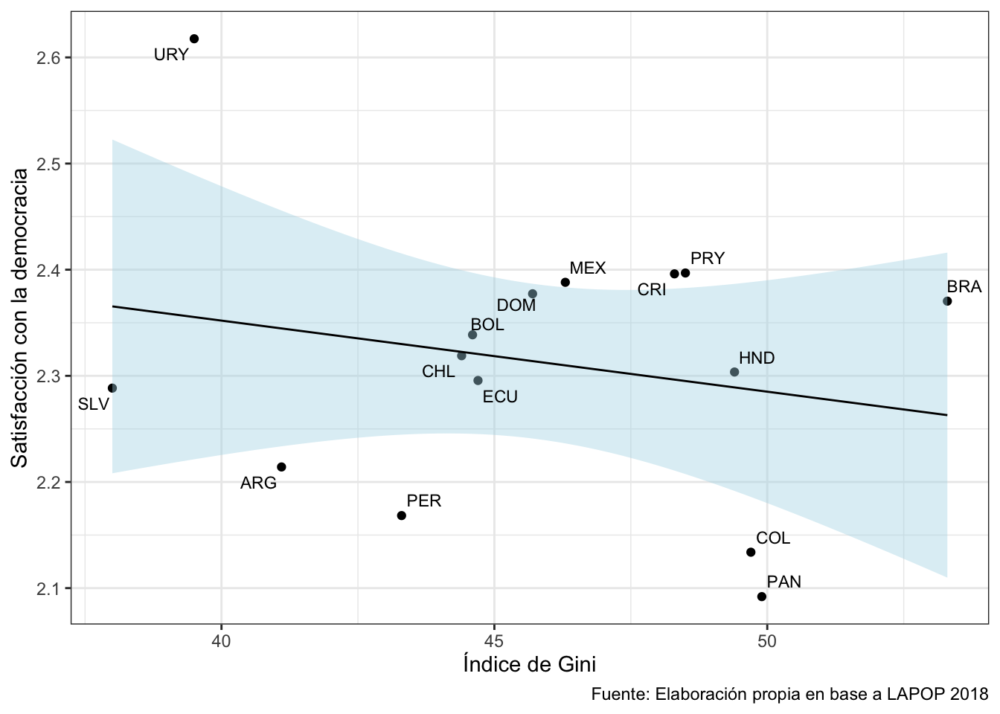
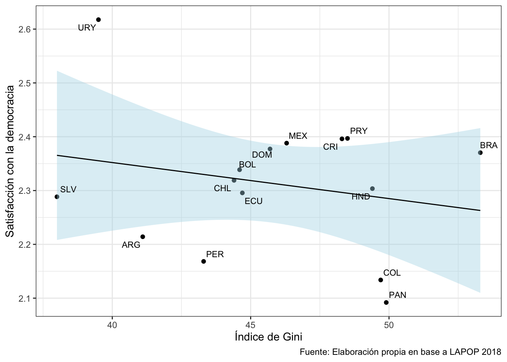

pacman::p_load(tidyverse, # Manipulacion datos
sjmisc, # Descriptivos
kableExtra, #Tablas
ggrepel) # Graficos
options(scipen = 999) # para desactivar notacion cientifica
rm(list = ls()) # para limpiar el entorno de trabajoReportes dinámicos 2
Completar hasta as 11:59 PM del viernes, 29 de septiembre de 2023
Objetivo de la práctica
El objetivo de esta guía práctica es aprender cómo crear y mostrar tablas y gráficos en documentos dinámicos mediante R Markdown. Además, aprenderemos cómo autoreferenciar elementos dentro de nuestro documento Rmd.
En detalle, aprenderemos:
- Generación y presentación de tablas en R Markdown.
- Generación y presentación de gráficos en R Markdown.
- Cómo autoreferenciar elementos dentro un documento R Markdown.
Recursos de la práctica
En esta práctica trabajaremos con un subconjunto de datos previamente procesados derivados de las encuestas socioeconómicas realizadas en diferentes países por el Latin American Public Opinion Proyect (LAPOP) en su ola del 2018. Esta base la pueden encontrar en el canal de U-Cursos sección Material Docente, o bien, en el siguiente enlace LAPOP 2018 podrán descargar el archivo que contiene el subconjunto procesado de la base de datos LAPOP 2018.
Flujo de trabajo
Pasos a seguir:
- Descargar la base de datos vía U-Cursos o mediante el enlace
LAPOP 2018 - Crear un proyecto de R (.Rproj) que se llame “practico-05”
- Crear carpetas de Input, Procesamiento y Output
- Ubicar la base de datos en una subcarpeta llamada datos dentro de la carpeta Input
- Crear un documento R Markdown en la carpeta Procesamiento
Repaso: R Markdown
Chunks
Preparación de datos
Comencemos por preparar nuestros datos. Iniciamos cargando las librerías necesarias.
Cargamos los datos alojados en la carpeta Input > datos
load(file = "Input/datos/lapop_proc_2018.RData") #Cargar base de datosA continuación, exploramos la base de datos lapop.
names(lapop) # Nombre de columnas [1] "year" "pais" "pais_name" "idnum" "upm"
[6] "strata" "wt" "weight1500" "sexo" "edad"
[11] "educ" "l1" "ideologia_f" "empleo" "decile"
[16] "it1" "prot3" "aoj12" "b2" "b3"
[21] "b4" "b10a" "b12" "b20" "b20a"
[26] "b21" "b21a" "n9" "n11" "n15"
[31] "ros4" "ing4" "eff1" "pn4" "exc7"
[36] "pol1" "vb2" "gini" "gdp" dim(lapop) # Dimensiones[1] 23386 39Contamos con 39 variables (columnas) y 23.386 observaciones (filas).
Tablas en R Markdown
Para generar tablas en R Markdown usaremos la función kable() del paquete kableExtra (hay otras maneras, pero esta es de las más útiles).
Primero, veamos como se distribuye la variable it1
sjmisc::frq(lapop$it1)Confianza Interpersonal (x) <numeric>
# total N=23386 valid N=22783 mean=2.69 sd=0.95
Value | Label | N | Raw % | Valid % | Cum. %
--------------------------------------------------------
1 | Nada confiable | 2580 | 11.03 | 11.32 | 11.32
2 | Poco confiable | 7157 | 30.60 | 31.41 | 42.74
3 | Algo confiable | 7693 | 32.90 | 33.77 | 76.50
4 | Muy confiable | 5353 | 22.89 | 23.50 | 100.00
<NA> | <NA> | 603 | 2.58 | <NA> | <NA>Generaremos un objeto llamado tab1 que usaremos como contenido. Esta tabla tendrá la distribución de it1 por país.
tab1 <- lapop %>%
group_by(pais, it1) %>% # agrupamos por pais y variable
summarise(n = n()) %>% # contamos por categ de respuesta
mutate(prop = round((n / sum(n)) * 100, 2)) %>% # porcentaje
na.omit() %>% # borramos NA
pivot_wider(id_cols = pais, names_from = it1, values_from = prop) # convertimos a formato ancho
tab1# A tibble: 15 × 5
# Groups: pais [15]
pais `1` `2` `3` `4`
<chr> <dbl> <dbl> <dbl> <dbl>
1 ARG 7.98 21.7 45.1 23.2
2 BOL 13.6 40.5 31.9 11.6
3 BRA 12.9 45.4 19.8 19.8
4 CHL 10.6 23.4 40.5 24.6
5 COL 9.14 25.7 34.4 29.0
6 CRI 8.53 22.6 34.6 32.2
7 DOM 11.3 29.0 31.3 24.0
8 ECU 11.7 37.8 32.2 17.3
9 HND 14.0 28.6 22.8 29.3
10 MEX 11.2 33.2 31.5 20.7
11 PAN 14.2 34 31.5 18.5
12 PER 14.9 42.3 31.2 10.6
13 PRY 9.7 24.1 35.6 26.9
14 SLV 8.6 32.3 26.3 29.2
15 URY 7.08 18.7 43.8 27.1Usamos la función kable() directamente:
tab1 %>%
kableExtra::kable()| pais | 1 | 2 | 3 | 4 |
|---|---|---|---|---|
| ARG | 7.98 | 21.66 | 45.09 | 23.23 |
| BOL | 13.56 | 40.49 | 31.87 | 11.59 |
| BRA | 12.88 | 45.39 | 19.76 | 19.76 |
| CHL | 10.56 | 23.44 | 40.54 | 24.60 |
| COL | 9.14 | 25.74 | 34.40 | 28.98 |
| CRI | 8.53 | 22.58 | 34.64 | 32.25 |
| DOM | 11.28 | 29.02 | 31.27 | 24.01 |
| ECU | 11.68 | 37.83 | 32.22 | 17.29 |
| HND | 14.04 | 28.65 | 22.82 | 29.29 |
| MEX | 11.20 | 33.16 | 31.46 | 20.70 |
| PAN | 14.24 | 34.00 | 31.49 | 18.47 |
| PER | 14.92 | 42.34 | 31.23 | 10.59 |
| PRY | 9.70 | 24.09 | 35.64 | 26.86 |
| SLV | 8.60 | 32.30 | 26.27 | 29.19 |
| URY | 7.08 | 18.72 | 43.77 | 27.07 |
Ahora tenemos una tabla, pero es muy simple y poco presentable. Especifiquemos opciones de formato:
format: para especificar formato de la tabla (html, markdown, latex)aling: para especificar alineacion de las celdas (‘r’=derecha, ‘c’=centro, ‘l’=izquierda),col.names: para nombres de columnas visibles en la tabla, se ingresan como un vectorc()
tab1 %>%
kableExtra::kable(format = "html",
align = "c",
col.names = c("País", "Nada confiable", "Poco confiable", "Algo confiable", "Muy confiable"))| País | Nada confiable | Poco confiable | Algo confiable | Muy confiable |
|---|---|---|---|---|
| ARG | 7.98 | 21.66 | 45.09 | 23.23 |
| BOL | 13.56 | 40.49 | 31.87 | 11.59 |
| BRA | 12.88 | 45.39 | 19.76 | 19.76 |
| CHL | 10.56 | 23.44 | 40.54 | 24.60 |
| COL | 9.14 | 25.74 | 34.40 | 28.98 |
| CRI | 8.53 | 22.58 | 34.64 | 32.25 |
| DOM | 11.28 | 29.02 | 31.27 | 24.01 |
| ECU | 11.68 | 37.83 | 32.22 | 17.29 |
| HND | 14.04 | 28.65 | 22.82 | 29.29 |
| MEX | 11.20 | 33.16 | 31.46 | 20.70 |
| PAN | 14.24 | 34.00 | 31.49 | 18.47 |
| PER | 14.92 | 42.34 | 31.23 | 10.59 |
| PRY | 9.70 | 24.09 | 35.64 | 26.86 |
| SLV | 8.60 | 32.30 | 26.27 | 29.19 |
| URY | 7.08 | 18.72 | 43.77 | 27.07 |
Ahora agregemos otros elementos importantes, como el título, estilo y fuente a la tabla:
caption: para dar titulo de la tablakable_classic(): para dar estilo (revisar otros aquí)add_footnote(): para agregar fuente o pie a la tabla
tab1 %>%
kableExtra::kable(format = "html",
align = "c",
col.names = c("País", "Nada confiable", "Poco confiable", "Algo confiable", "Muy confiable"),
caption = "Tabla 1. Confianza interpersonal según país") %>%
kableExtra::kable_classic() %>%
kableExtra::add_footnote(label = "Fuente: Elaboración propia en base a LAPOP 2018.")| País | Nada confiable | Poco confiable | Algo confiable | Muy confiable |
|---|---|---|---|---|
| ARG | 7.98 | 21.66 | 45.09 | 23.23 |
| BOL | 13.56 | 40.49 | 31.87 | 11.59 |
| BRA | 12.88 | 45.39 | 19.76 | 19.76 |
| CHL | 10.56 | 23.44 | 40.54 | 24.60 |
| COL | 9.14 | 25.74 | 34.40 | 28.98 |
| CRI | 8.53 | 22.58 | 34.64 | 32.25 |
| DOM | 11.28 | 29.02 | 31.27 | 24.01 |
| ECU | 11.68 | 37.83 | 32.22 | 17.29 |
| HND | 14.04 | 28.65 | 22.82 | 29.29 |
| MEX | 11.20 | 33.16 | 31.46 | 20.70 |
| PAN | 14.24 | 34.00 | 31.49 | 18.47 |
| PER | 14.92 | 42.34 | 31.23 | 10.59 |
| PRY | 9.70 | 24.09 | 35.64 | 26.86 |
| SLV | 8.60 | 32.30 | 26.27 | 29.19 |
| URY | 7.08 | 18.72 | 43.77 | 27.07 |
| a Fuente: Elaboración propia en base a LAPOP 2018. |
¿Muy grande? También podemos ajustar el ancho que ocupa la tabla, el tamaño de la letra y la posición:
full_width: para indicar si la tabla cubre todo el ancho o no (TRUE/FALSE)position: para indicar posicion de la tabla en el documentofont_size: para indicar tamaño de la letra
tabla1 <- tab1 %>%
kableExtra::kable(format = "html",
align = "c",
col.names = c("País", "Nada confiable", "Poco confiable", "Algo confiable", "Muy confiable"),
caption = "Tabla 1. Confianza interpersonal según país") %>%
kableExtra::kable_classic(full_width = F, position = "left", font_size = 12) %>%
kableExtra::add_footnote(label = "Fuente: Elaboración propia en base a LAPOP 2018.")
tabla1| País | Nada confiable | Poco confiable | Algo confiable | Muy confiable |
|---|---|---|---|---|
| ARG | 7.98 | 21.66 | 45.09 | 23.23 |
| BOL | 13.56 | 40.49 | 31.87 | 11.59 |
| BRA | 12.88 | 45.39 | 19.76 | 19.76 |
| CHL | 10.56 | 23.44 | 40.54 | 24.60 |
| COL | 9.14 | 25.74 | 34.40 | 28.98 |
| CRI | 8.53 | 22.58 | 34.64 | 32.25 |
| DOM | 11.28 | 29.02 | 31.27 | 24.01 |
| ECU | 11.68 | 37.83 | 32.22 | 17.29 |
| HND | 14.04 | 28.65 | 22.82 | 29.29 |
| MEX | 11.20 | 33.16 | 31.46 | 20.70 |
| PAN | 14.24 | 34.00 | 31.49 | 18.47 |
| PER | 14.92 | 42.34 | 31.23 | 10.59 |
| PRY | 9.70 | 24.09 | 35.64 | 26.86 |
| SLV | 8.60 | 32.30 | 26.27 | 29.19 |
| URY | 7.08 | 18.72 | 43.77 | 27.07 |
| a Fuente: Elaboración propia en base a LAPOP 2018. |
Gráficos en R Markdown
Para hacer gráficos usaremos el paquete ggplot2 que ya conocemos.
Primero, creamos un objeto llamado g1 en donde almacenaremos la información que queremos graficar. Este objeto tendrá, para cada país, el promedio de satisfacción con la democracia y del índice de gini.
g1 <- lapop %>%
group_by(pais) %>%
summarise(satis_m = mean(pn4, na.rm = T),
gini_m = mean(gini, na.rm = T))
g1# A tibble: 15 × 3
pais satis_m gini_m
<chr> <dbl> <dbl>
1 ARG 2.21 41.1
2 BOL 2.34 44.6
3 BRA 2.37 53.3
4 CHL 2.32 44.4
5 COL 2.13 49.7
6 CRI 2.40 48.3
7 DOM 2.38 45.7
8 ECU 2.30 44.7
9 HND 2.30 49.4
10 MEX 2.39 46.3
11 PAN 2.09 49.9
12 PER 2.17 43.3
13 PRY 2.40 48.5
14 SLV 2.29 38
15 URY 2.62 39.5Ahora, graficamos esta asociación en un objeto llamado grafico1.
grafico1 <- ggplot(data = g1,
mapping = aes(x = gini_m, y = satis_m, label = pais)) +
geom_point() +
geom_smooth(method = "lm",colour = "black",fill="lightblue",size=0.5) +
geom_text_repel(size=3, show.legend = FALSE) +
labs(x = "Índice de Gini",
y = "Satisfacción con la democracia",
caption = "Fuente: Elaboración propia en base a LAPOP 2018") +
theme_bw()
grafico1
Para especificar elementos de presentación de gráficos en un documento Rmd. usaremos las opciones de chunks. Algunas de las más comunes son:
fig.align: para espeficiar alineación del gráfico en el documento (left, right, center)out.width: para especificar el tamaño del gráfico en el documentofig.cap: para espeficiar el título del gráfico que se muestra en el documento
Llamemos a nuestro grafico1 pero ahora especificando fig.align='center', out.width='80%' y fig.cap='Asociación entre Índice de Gini y Satisfacción con la democracia'en las opciones de chunk.
grafico1
Ahora tenemos un gráfico centrado, más grande y con un título en nuestro documento.
Autoreferenciar elementos dentro un R Markdown
tabla1| País | Nada confiable | Poco confiable | Algo confiable | Muy confiable |
|---|---|---|---|---|
| ARG | 7.98 | 21.66 | 45.09 | 23.23 |
| BOL | 13.56 | 40.49 | 31.87 | 11.59 |
| BRA | 12.88 | 45.39 | 19.76 | 19.76 |
| CHL | 10.56 | 23.44 | 40.54 | 24.60 |
| COL | 9.14 | 25.74 | 34.40 | 28.98 |
| CRI | 8.53 | 22.58 | 34.64 | 32.25 |
| DOM | 11.28 | 29.02 | 31.27 | 24.01 |
| ECU | 11.68 | 37.83 | 32.22 | 17.29 |
| HND | 14.04 | 28.65 | 22.82 | 29.29 |
| MEX | 11.20 | 33.16 | 31.46 | 20.70 |
| PAN | 14.24 | 34.00 | 31.49 | 18.47 |
| PER | 14.92 | 42.34 | 31.23 | 10.59 |
| PRY | 9.70 | 24.09 | 35.64 | 26.86 |
| SLV | 8.60 | 32.30 | 26.27 | 29.19 |
| URY | 7.08 | 18.72 | 43.77 | 27.07 |
| a Fuente: Elaboración propia en base a LAPOP 2018. |
grafico1
Se pueden referenciar tablas, graficos y resultados
hola
Actividad en salas
Resumen
Hoy aprendímos a generar y presentar tablas y grafícos en documentos dinámicos con R Markdown, así como también a autoreferenciar elementos dentro de un documento Rmd. En detalle, aprendímos:
- Generación y presentación de tablas en R Markdown.
- Generación y presentación de gráficos en R Markdown.
- Cómo autoreferenciar elementos dentro un documento R Markdown.
Reporte de progreso
Completar el reporte de progreso correspondiente a esta práctica aquí. El plazo para contestarlo es hasta el día viernes de la semana en la que se publica la práctica correspondiente.